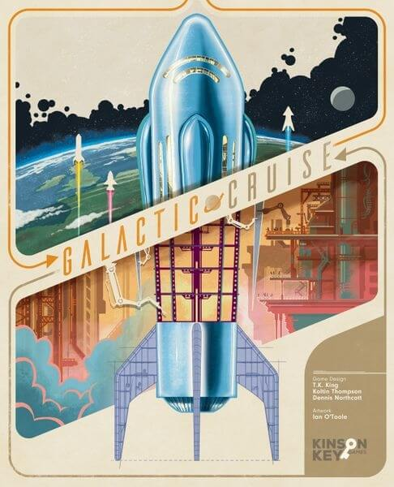

Guia dos prêmios de 2027: quando saem Golden Geek, Spiel des Jahres e Kennerspiel
28 de outubro de 2026 · Redação Elite Boardgamers

Capa de Galactic Cruise via Ludopedia
Os três prêmios que mais orientam a nossa pauta de resenhas seguem um calendário fixo: o Golden Geek, votado pelos usuários do BoardGameGeek, sai entre abril e maio; o Spiel des Jahres e o Kennerspiel, decididos por júri, têm indicados em maio e vencedores em julho.
Por que importa
Só resenhamos jogos premiados, então este calendário é também o da nossa pauta. Saber quando cada prêmio sai ajuda a decidir se compra agora ou espera: um jogo indicado em maio costuma ficar mais caro e mais difícil de achar depois da vitória.
Análise Elite Boardgamers
Em números
15categorias do Golden GeekBoardGameWire
12/07/2026cerimônia do Spiel des Jahres em BerlimiCv2
11/05/2026anúncio dos vencedores do Golden GeekOpinionated Gamers
Contexto
No Golden Geek do ciclo 2025, anunciado em maio de 2026, Galactic Cruise venceu como jogo pesado do ano, O Senhor dos Anéis: Sina da Sociedade levou jogo médio, cooperativo e temático, e Hot Streak ficou com jogo leve e de festa. Vantage foi o mais inovador e o melhor solo.
No Spiel des Jahres 2026, venceu Dito!, de Martin Ang; no Kennerspiel, Rebirth, de Reiner Knizia. Fora desse calendário, o Deutscher Spiele Preis, votado pelo público, sai na Spiel Essen, em outubro: em 2026 venceu Santuário.
No Brasil
Vários premiados de 2026 já estão aqui: Sina da Sociedade (Galápagos) tem resenha nossa, Vantage chegou às lojas em outubro e Santuário saiu pela Grok. Não encontramos edição nacional anunciada de Dito!, Rebirth, Galactic Cruise ou Hot Streak até 28/10/2026.
O que diz a crítica
Sobre Dito!: o que conta não é saber as respostas, e sim entender o ponto de vista dos outros.Júri do Spiel des Jahres, via Tagesspiegel/dpa (tradução livre)
Interessa a você se…
Usa os prêmios para decidir o que comprar
Quer saber quando sair cada lista de indicados
Nossa opinião
Informativo
Guarde as janelas: indicados do Golden Geek em abril, do Spiel des Jahres em maio, vencedores em maio e julho. As datas exatas de 2027 ainda não foram anunciadas; atualizamos esta página quando saírem.